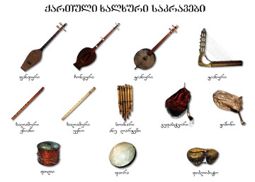

ქართული ხალხური მუსიკა სათავეს უძველეს დროში იღებს. იგი თავიდანვე დაკავშირებული იყო ჩვენს წინაპართა ყოფასთან. მასში, როგორც სარკეში, არეკლილია ქართველი ერის უმდიდრესი ისტორია, სულიერი მისწრაფებანი, ზნეობრივი სისპეტაკე, კაცთმოყვარეობა, პატრიოტული და გმირული შემართება. ხალხური მუსიკა ოდითგანვე ერის სულიერ საზრდოს წარმოადგენდა და ქართველი კაცის ყოველ სამეურნეო თუ ყოფით საქმიანობას უკავშირდებოდა. მღეროდნენ ომის, შრომის, ავადმყოფობის, მხიარულების, მწუხარების დროს. სიმღერა სწორედ ის ძალა იყო, რომელიც გაჭირვებაში მხნეობასა და სიმტკიცეს მატებდა. ამიტომაც უფრთხილდებოდა ქართველი კაცი თავის მრავალსაუკუნოვან მუსიკალურ ენას.
უძველესი ცნობები ქართული ხალხური მუსიკის შესახებ არქეოლოგიურ მასალებსა და ძველბერძნულ წყაროებში მოიპოვება. აღმოჩენილია სხვადასხვაგვარი საკრავი, რომლებიც ჯერ კიდევ ჩვენს წელთ აღრიცხვამდე დაუმზადებიათ: სალამურები, ჩანგი, ლირა
უნდა აღინიშნოს, რომ ქართულ ხალხურ სიმღერებს უხსოვარი დროიდან მრავალხმიანობა ახასიათებდათ. მრავალხმიანობა, ანუ პოლიფონიურობა, კი უნიკალურ მოვლენად ითვლება და მსოფლიოს ხალხთა შორის ერთეულები თუ დაიტრაბახებენ ასეთი სიმდიდრით. ქართული მრავალხმიანობა მათ შორისაც სრულიად განსაკუთრებულია, განსხვავებული და მრავალეფროვანი. საქართველოს ყველა კუთხეს თავისებური მუსიკალური დიალექტი აქვს, ასეთი დიალექტები 15-მდე აღწევს.
ქართული ხალხური საკრავები

ქართული ხალხური საკრავები — ცნობილია უძველესი დროიდან, როგორც წესი, სიმღერის ან ცეკვის თანხლების ფუნქციით. უძველესი არქეოლოგიური ცნობა ქართული საკრავის შესახებ, მიეკუთვნება ძვ.წ.-ით XV ს.[1].
საკრავი, როგორც „მატერიალური მუსიკალური კულტურის ძეგლი“, მუსიკის ისტორიის მნიშვნელოვან წყაროს წარმოადგენს. მისი მეშვეობით შესაძლებელი ხდება ხალხური ხმიერი მუსიკის და, საზოგადოდ, მუსიკალური კულტურის ისტორიის ისეთი საკითხების გარკვევა, რაც სხვა გზით გაძნელდებოდა. ცნობილია, რომ ხმიერი და საკრავიერი მუსიკის განვითარება მჭიდროდაა დაკავშირებული ერთმანეთთან. ხმიერი მუსიკა სტიმულს აძლევს საკრავიერის განვითარებას, მაგრამ საკრავიც თავის მხრივ გარკვეულ გავლენას ახდენს ხმიერ მუსიკაზე ინტონირებს თვისებრივი გარკვეულობის, ბგერათრიგის კრისტალიზებისა და მუსიკალურ პრაქტიკაში დაზუსტებული ინტონაციის განმტკიცების მხრივ[2][3].
ქართული ხალხური მუსიკალური ინსტრუმენტარიუმი განსაკუთრებით საინტერესოა იმ მხრივ, რომ მასში, განვითარებული საკრავების გვერდით, შემონახულია შედარებით მარტივი და არქაული ფორმბიც, რომელთა შედარებით-ისტორიული შესწავლა საშუალებას გვაძლევს თვალი გავადევნოთ საკრავის განვითარებას და დავადგინოთ მისი განვითარების ძირითადი ეტაპები. საუკუნეთა მანძილზე შექმნილ და თანდათან სრულქმნილ საკრავებზე ასახულია ხანგრძლივი დაკვირვების შედეგად დაგროვილი ხალხური ცოდნა და გამოცდილება და ხალხის მუსიკალური აზროვნება.